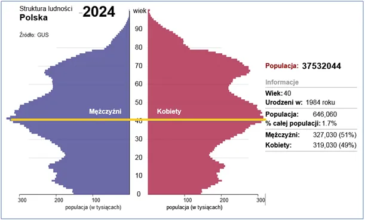
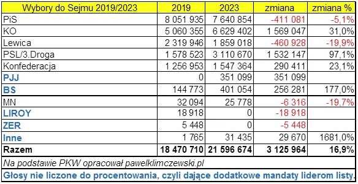

Bezlitosna tabelka
11 listopada zostawiłem wpis o prawdziwym obliczu PiS na stronie "opozycjonisty" Marka Jakubiaka. Kubły pomyj wylali na mnie "patrioci".
Jestem socjologiem i wiem, że postawy kształtowane głębokimi emocjami od katastrofy smoleńskiej są praktycznie nie do zmiany, ale tu optymistyczna wersja na najbliższe lata. Demografia! Demografia to proces, każdego roku z elektoratu ubywa kilkaset tysięcy ludzi najstarszych, a w polskich warunkach, niestety przybywa mniej najmłodszych, ale ich perspektywa jest zupełnie inna. Fakt, że czerpią oni wiedzę z internetu nie czyni ich ludźmi dobrze poinformowanymi, ale potencjalnie możemy do nich dotrzeć, bo najstarsze generacje są całkowicie w objęciach PoPiSu.

Drugi wyż demograficzny to obecnie 40-latkowie. Ci ludzie to generacja postmodernistyczna i przez ostatnie 2 dekady tresowana mrzonkami wolności absolutnej łącznie z prawem do zabijania swych dzieci i rodziców. Za kilka miesięcy, po objęciu władzy w USA przez republikanów dowiemy się, czy kontrrewolucja konserwatywna stanie się faktem, czy był to tylko zabieg socjotechniczny do spuszczenia ciśnienia z nabuzowanego kotła amerykańskiej klasy pracującej.

W tej sytuacji wszyscy "faszyści" będą skarbem narodowym, który będzie chciał zawłaszczyć PiS w na wyborach 2027. Klęska platformy będzie druzgocąca, bo kolosalna fala inflacji dopiero przed nami a wydatki zbrojeniowe w USA z jednej strony i na "obronę Europy" z drugiej będą rosły. Tabelka porównująca elektoraty pomiędzy wyborami 2019-2023 jest bezlitosna.

Pół miliona wyborców lewicy, czyli 20%, odpadło bezpowrotnie. Podobnie z PiS, ponad 400 tysięcy mniej głosów.
Wysoka frekwencja, czyli ludzie, którzy wcześniej nie głosowali, napędziła wzrosty pozostałych partii. Nieobecna w mediach Konfederacja urosła o 300 tys. głosów, jej najbardziej radykalna Korona Grzegorza Brauna pomnożyła ilość posłów 4 krotnie, a było to przed gaszeniem Chanuki!
Jest to doskonały czas by pracować i zjednywać ludzi z młodszych pokoleń. Zatem nie bójmy się konfrontować i dyskutować, jeśli to generuje ruch i rozszerza zasięgi. Póki co mam 100% bana na X u Muska, zatem proszę o linkowanie mojej strony na X.
"Demografia po wyborach ze szczyptą teologii w tle i zapachem siarki w świątyni." https://pawelklimczewski.pl/2023/10/24/demografia-po-wyborach-ze-szczypta-teologii-w-tle-i-zapachem-siarki-w-swiatyni/
Paweł Klimczewski